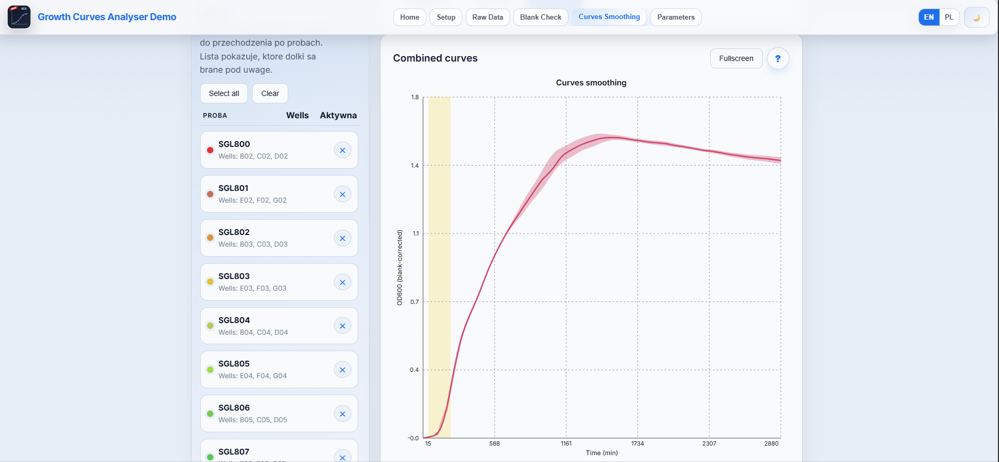

B.Sc. Genetics & Experimental Biology
Podstawy genetyki, mikrobiologii i pracy w mokrym labie. Wzmocnione samodzielną analizą danych.
Bioinformatics • Wet-lab • Tool-building
Łączę zaplecze laboratoryjne (genetyka, mikrobiologia) z analizą danych i budowaniem narzędzi. Skupiam się na standaryzacji przepływu danych biologicznych — od płytek do interaktywnych wyników.
Najważniejsze rzeczy na start: edukacja, praktyki badawcze, poster i bieżący projekt analizy krzywych wzrostu.
Podstawy genetyki, mikrobiologii i pracy w mokrym labie. Wzmocnione samodzielną analizą danych.
Staże badawcze: mikrobiologia, biofizyka, przygotowywanie szczepów i pomiary fluorescencji.
32 szczepy E. coli + pomiary fluorescencji + analiza w Pythonie.
Zobacz PDFWebowe narzędzie do jednolitej analizy krzywych wzrostu. Standaryzacja i eksport wyników.
Aktualnie buduję narzędzie do analizy krzywych wzrostu: ujednolicam formaty eksportu, automatyzuję korektę blanków i wygładzanie LOESS, żeby laboratoria mogły szybko porównywać wyniki.
Krótka oś czasu łącząca część akademicką i praktyczną.
Aktualny projekt w układzie gotowym na rozbudowę (projekty / research / postery / kontakt).

Poster naukowy do pobrania; powstał z pełnego cyklu: konstrukcja szczepów → pomiary → analiza → wizualizacja.
Transdukcja fagowa, klonowanie, rekombinacja homologiczna, transformacje. Następnie pomiary fluorescencji i kod w Pythonie do czystych wizualizacji.